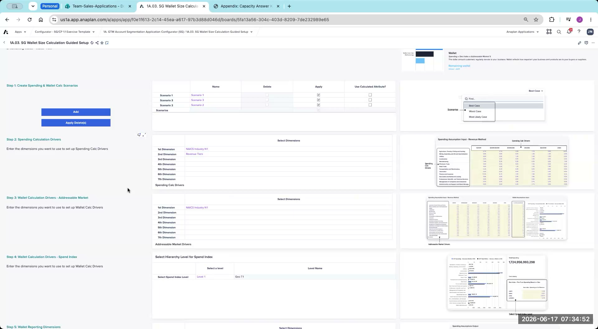
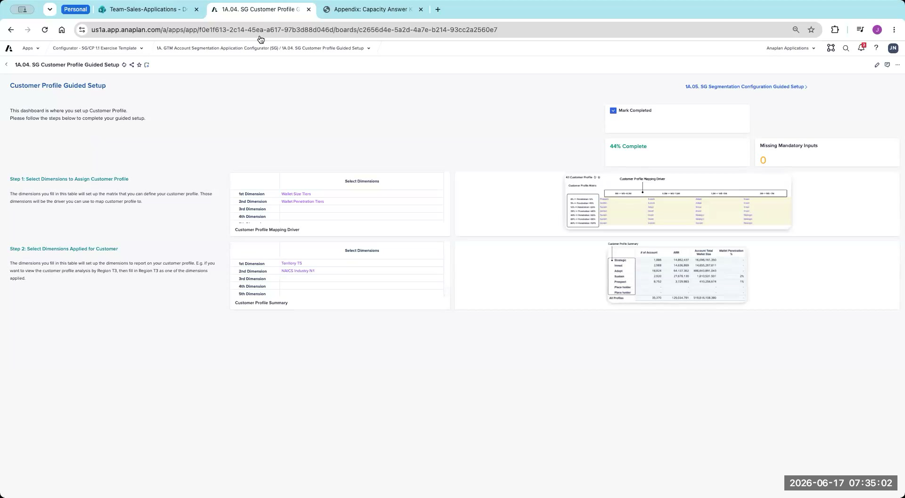
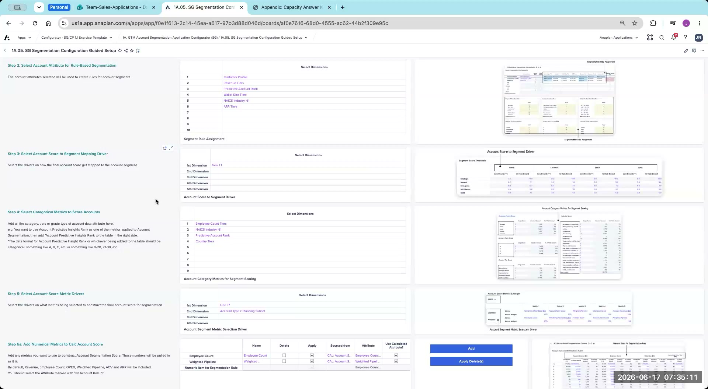
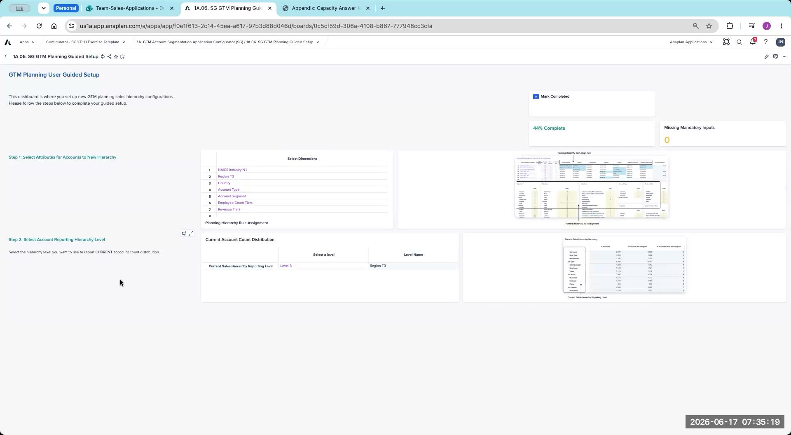

Appendix: Segmentation Configurator Answer Key
Facilitator reference — review after the lab exercise, not before
This answer key is intended for facilitator-led debrief after the lab exercise is complete. Review your own answers first, then compare with the key during the group debrief session.
Each section below shows what the configurator page should look like when the Segmentation lab is correctly completed against the CloudWorks case study. Use these reference captures to verify your own configuration during debrief.
Page 1.01 — Data Hub Setup
Establishes the dimensions, facts, and attributes the entire app reads from. Step 1 selects which objects (Order, Opportunity, Account, Product, Territory, Employee, Geography, NAICS Industry, Sales Role, etc.) flow into the Data Hub and Spoke models; Step 2 renames each attribute and sets Format, Validation, and Enable for Calculations so downstream configurator pages can reference them.

Page 1A.01 — SG GTM Performance Analysis Guided Setup
Configures the dimensionality of the GTM Performance dashboard — the historical revenue view. Sets Territory T5 as the top reporting level, picks Country + State for the map breakdown, marks Country Tiers for tier analysis, and selects Close Won (forecast category) plus New Business / Add-on Business (record types) as the inputs to pipeline analysis.

Page 1A.02 — SG UCP & Account Hierarchy Guided Setup
Defines the criteria for tagging accounts as UCP (Unaddressable Customer Profile) — accounts excluded from planning — and configures the account-parent hierarchy. UCP rules use NAICS Industry N1, Country, Revenue Tiers, and Employee Count Tiers; territory alignment runs at Geo T1 with NAICS Industry N1 as the industry level; the account parent chain is mapped through Level 10.
![1A.02 SG UCP and Account Hierarchy Guided Setup answer key — Step 1 Choose UCP Defining Criteria with NAICS Industry N1, Country, Revenue Tiers, Employee Count Tiers selected; Step 2 Choose Account Firmographics with multiple firmographic attributes selected for the Account Dashboard; Step 3 Select Account Hierarchy Alignment Level with Territory Hierarchy Level Geo T1 and Industry Level NAICS Industry N1; Step 4 Create the total level of Account parent with multi-level Account Parent Chain populated through Level 10 Parent](../img/answer-keys/seg-1a-02.png)
Page 1A.03 — SG Wallet Size Calculation Guided Setup
Configures the wallet-size calculation — the addressable-spend estimate that powers segmentation and account potential. Creates three scenarios (Best Case / Worst Case / Most Likely Case), drives the spending calculation from NAICS Industry N1 + Revenue Tiers, runs the addressable market at NAICS Industry N1, and sets the spend index at Geo T1.

Page 1A.04 — SG Customer Profile Guided Setup
Builds the Customer Profile matrix — maps each account into a profile band (Prospect / Adopt / Sustain / Strategic / Invest) based on Wallet Size × Wallet Penetration. Mapping dimensions are Wallet Size Tiers and Wallet Penetration Tiers; reporting cuts are Territory T5 and NAICS Industry N1.

Page 1A.05 — SG Segmentation Configuration Guided Setup
The core segmentation page. Selects six account attributes for the rule-based path (Customer Profile, Revenue Tiers, Predictive Account Rank, Wallet Size Tiers, NAICS Industry N1, ARR Tiers), picks Geo T1 as the score-to-segment mapping driver, and configures categorical (Employee Count Tiers + 3 others) plus numerical (Employee Count, Weighted Pipeline) metrics that feed the segmentation score.

Planning Subset; Step 6a Add Numerical Metrics with Employee Count and Weighted Pipeline" style="width:100%;border-radius:6px;border:1px solid #e2e8f0;">Page 1A.06 — SG GTM Planning Guided Setup
Stands up the GTM Planning hierarchy sandbox for stress-testing alternative go-to-market structures without disturbing the production sales hierarchy. Maps seven account attributes (NAICS Industry, Region T3, Country, Account Type, Account Segment, Employee Count Tiers, Revenue Tiers) into the new hierarchy and reports at Level 3 Region T3.
